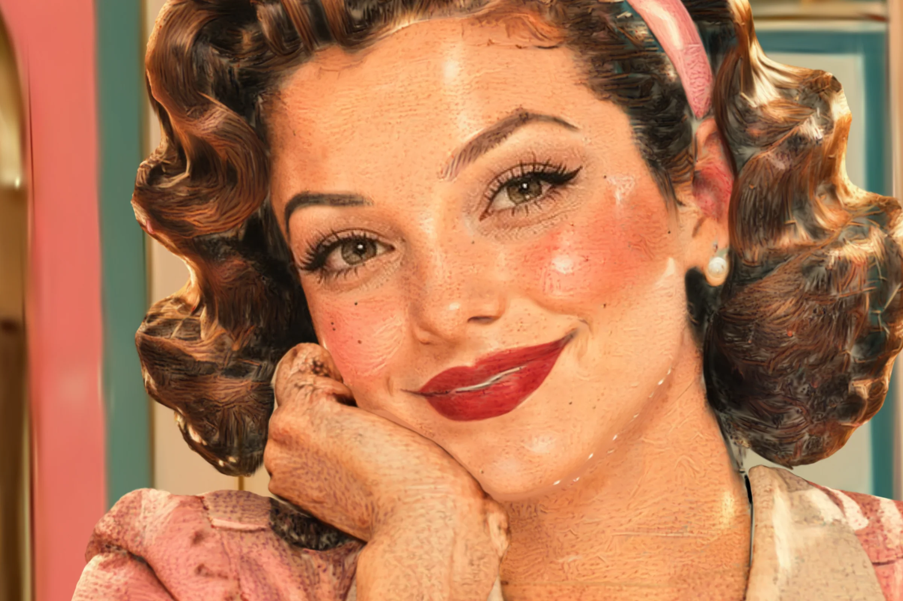
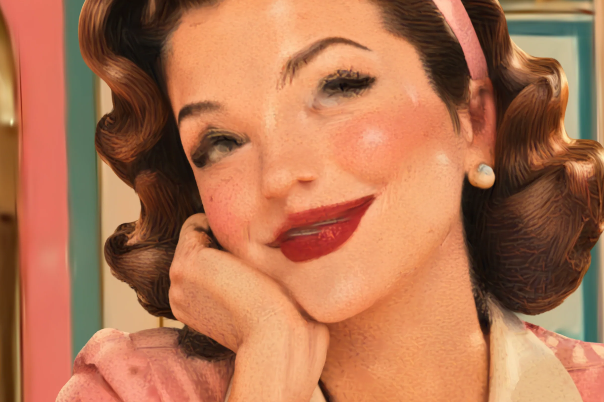
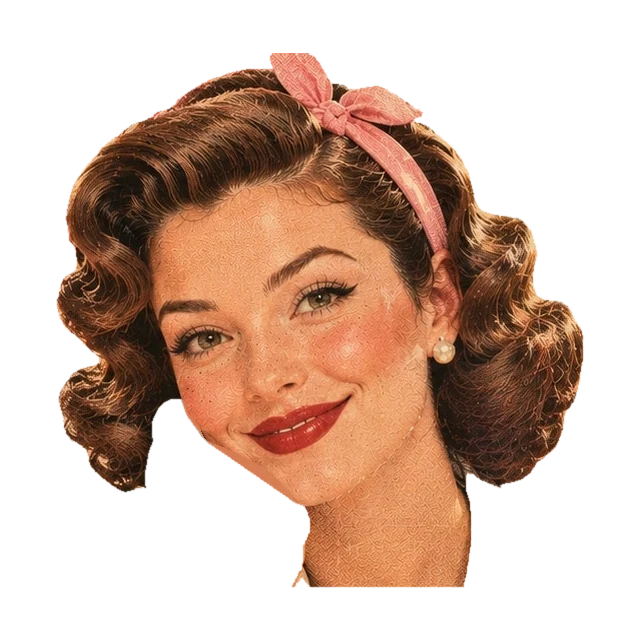
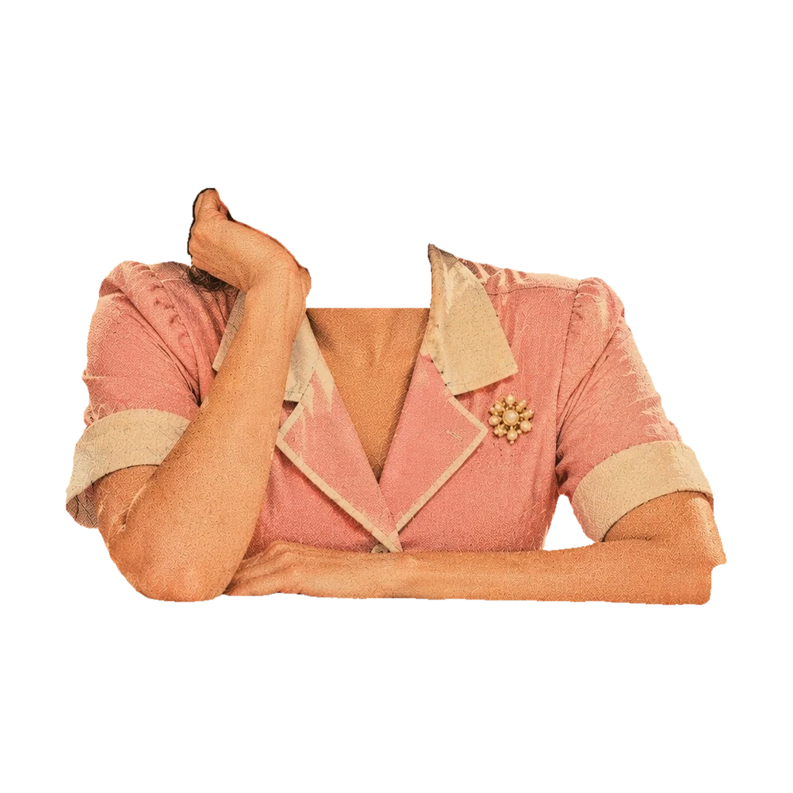
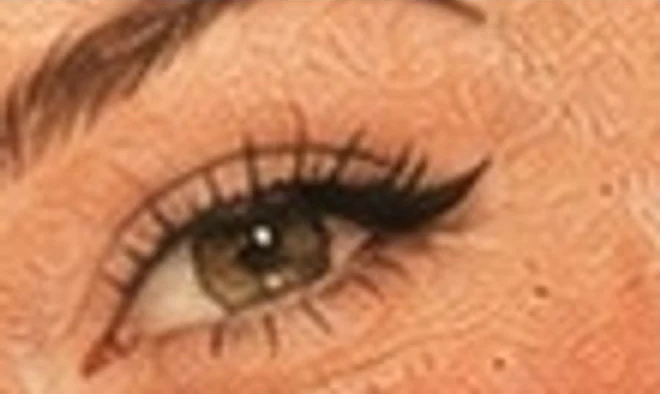
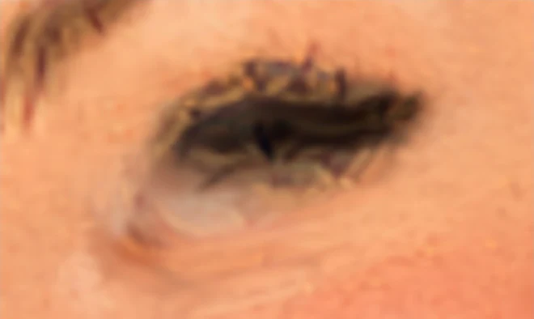
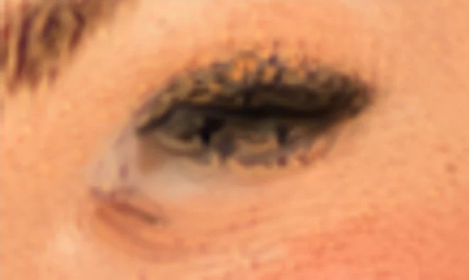
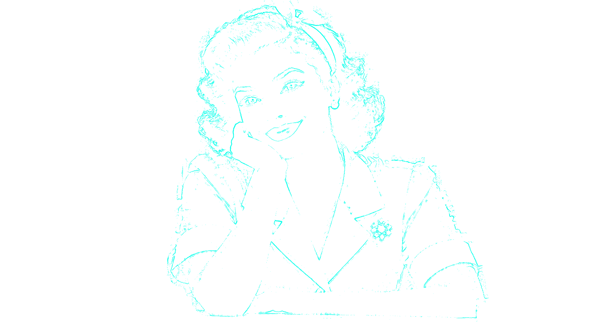
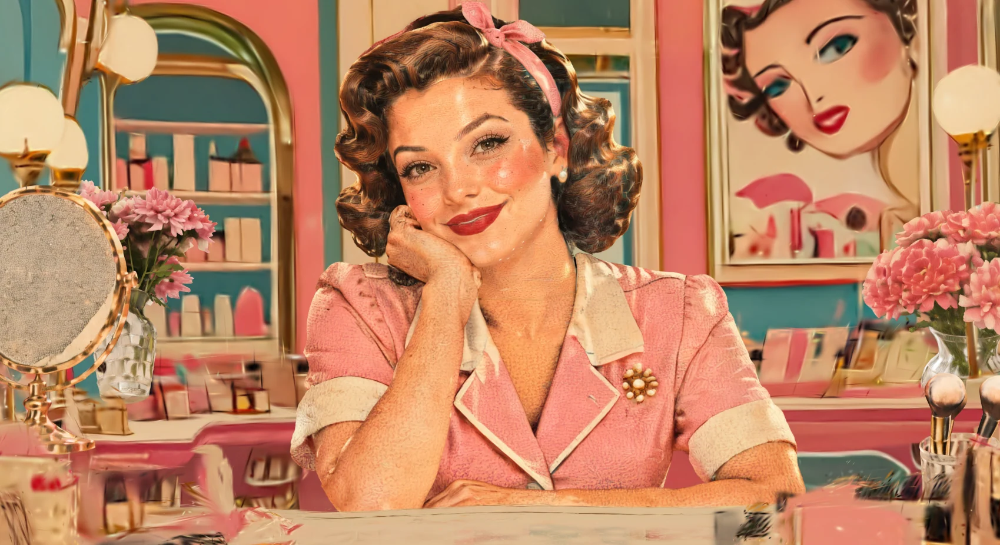

Split the subject. Keep the detail.
One photo becomes a 3D scene, and the face is where it usually falls apart. Object split cuts a person into parts, builds each part on its own, places it to the photo's pixels, and gives the eyes back to the photo.
One 3D object for the whole person.
Her face takes only about a third of the width the 3D model is given. Her eyes come out smeared.


Pictures are renders from the photo's own camera, drawn by Spark, the viewer's own splat renderer. The dots in steps 03 and 04 are a sample of the real Gaussians, not a render.
Cut her into parts a 3D model can do justice
SAM 3.1 finds nine parts: hair, face, neck, ear, headband, hand, dress and both arms. We regroup them into what a 3D model builds best, a head and a body. They overlap across the neck so a seam can't open, and the hand stays with the body so it can sit in front of her jaw.
Hover a part to name it. Masks from SAM 3.1, drawn over the photo.
What the 3D model receives
The 3D model frames each cutout to its object. Given the whole figure, her face is a third of the picture. Given the head alone, it is more than half: the same model sees it larger, for the same budget of Gaussians.


Show the "more Gaussians" test



Put every part where the photo has it
A 3D model gives each part an arbitrary size and turn. The pipeline's own fitter matches silhouettes, and a silhouette can't say where an eye is. So each part is fitted to the photo's pixels, then every Gaussian is nudged sideways in the photo's view until features, outlines and the seam land on the photo's.

| Feature | One object | Silhouette fit | Pixel-aligned |
|---|
How far each feature lands from the photo's, in photo pixels. Rows highlight their ring on hover.
Hand the eyes back to the photo
At the photo's own camera the head's eyes, brows, nose, mouth and earring each land within a pixel of the photo's, so the photo is ground truth for the eyes. A thin layer of new Gaussians closes the gaps the 3D model leaves there, and the colours around the eyes are fitted to the photo by least squares. The rest of the picture is left alone.
The layer is painted from the photo's camera. Near that viewpoint it is the photo; far to the side the lashes read as flat. It needs the photo as ground truth, so it is a correction for views near the photo's, not a way to invent detail the photo never had.
Walk around the result
The same parts, live in your browser. Drag to orbit, jump between views, pull the head off the body, or wipe between one object and the split. Ctrl or ⌘ with the scroll wheel zooms.

Measured, not claimed
Every figure here comes from the saved renders and masks. Placement and detail are reported separately: each eye is first slid onto the photo's, then compared, so a misplaced eye can't pass for a blurry one.
One photo, the "Beauty Counter Smile" portrait, measured against the photo from its own camera. Eye sharpness is the variance of the Laplacian inside each eye, as a share of the photo's. Placement is the distance between where the render puts the eye and where the photo has it.
Every part is saved
What this doesn't claim
A demo should say where it stops.